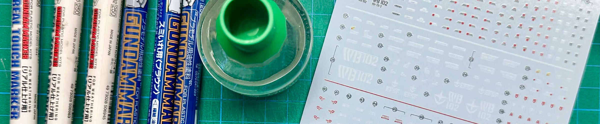
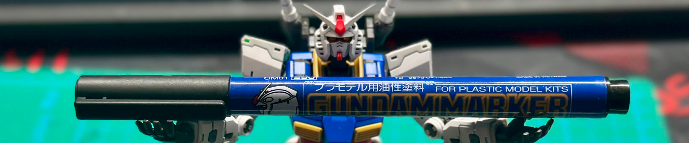
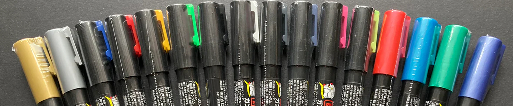
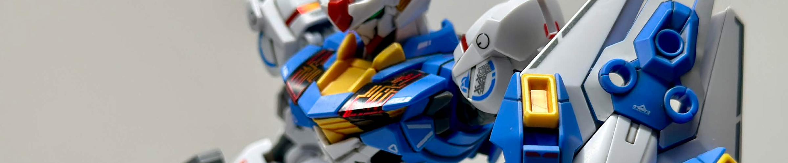
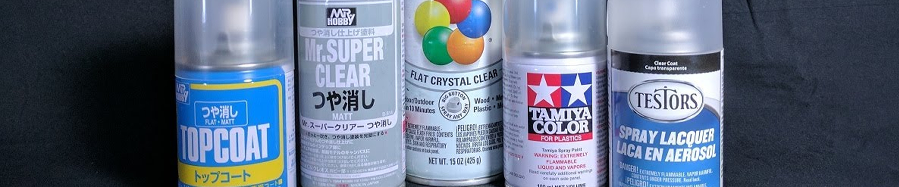

Detailing Tools
Now that you've built your Gunpla model, you can take it to the next level with just a few simple detailing tools and a little effort! While there are endless ways to customize your Gunpla, these are the most common and simplest tools that you'll find.
Panel Liners

Panel lining is a super easy process that makes your Gunpla look a hundred times better! You may find that parts of your Gunpla have pre-molded, details. Panel lining involves lining concave lines and raised surfaces with ink, whether it be through pen-type panel liners or flow-type panel liners. By panel lining, you can give these details contrast and bring them out fully.
Pen-type panel liners are just as you'd expect; they're fine-tip pens that you use to draw into panel lines by hand. These are the panel liners that I would recommend to beginners, as they're simple to use and require little preparation.
| Brand | Price Range ($CAD) | Quality | Notes |
|---|---|---|---|
| ⭐Fine-Tip Gundam Marker | $4.00 | ★★★★☆ | Oil-based. Stores may have higher prices due to import fees |
| ⭐Pigma Micron Pen 005 | $5.00 | ★★★★☆ | Pigment-based. Some colors may not be available in 005 thickness |
| Sharpie Ultra Fine Point Marker | $3.00 | ★★★☆☆ | Alcohol-based |
Flow-type panel liners use capillary action (liquid flowing through narrow spaces without gravity) to fill in gaps automatically. These will often make the process much faster and last a long time, but are less precise and require clear-coating the kit beforehand as the enamel solvent can damage the plastic (This can be reduced by lining the kit while it is on the runner, but still leads to brittleness).
Check out the following articles about my recommended panel liners and how to panel line respectively.
Paint Markers

Image Source: Chico Hobby
For surface texturing, touch-ups, and painting small details, paint markers are the perfect way to quickly add detail to your kits. While there are many brands of paint markers, there are those made specifically for model kits as well.
| Brand | Price Range ($CAD) | Quality | Notes |
|---|---|---|---|
| ⭐Gundam Marker | $3.00 | ★★★★☆ | Alcohol-based; will adhere to unprimed surfaces, but damages ABS plastic. Usually comes in sets |
| ⭐Gundam Marker Real-Touch Type | $4.00 | ★★★★★ | Water-based; used specifically for weathering |
| ⭐AK Interactive Real Color Marker | $4.00 | ★★★★☆ | Acrylic-based, but designed to adhere to unprimed surfaces |
| DSPIAE Soft-Tip Acrylic Marker | $3.00 | ★★★☆☆ | Acrylic-based; will come off from unprimed surfaces |
| HOBBY-MIO Model Marker | $3.50 | ★★★☆☆ | Water-based; Easy to use, but quality depends on the color |
Note that most Gundam Markers are alcohol-based, which will eat through ABS plastic if not primed first; you can find out which plastic type is used on the back of each runner. Exercise caution when using!
Check out the following articles for quick guides on weathering and painting small details respectively.
Waterslide Decals

While not a tool per se, if you want to give your Gunpla tons of detail, consider applying waterslide decals on your kit. Compared to sticker decals, these will not only adhere better, but blend in better with the plastic. While Bandai has their own official line of waterslide decals, they aren't available for every kit and are quite fragile. As such, I actually recommend third-party decals, which are not only cheaper but often higher quality as well.
| Brand | Price Range ($CAD) | Quality | Notes |
|---|---|---|---|
| ⭐G-Rework | $10.00—$15.00 | ★★★★★ | Available on G-Rework website, often do not have placement guides |
| ⭐Delpi | $5.00—$10.00 | ★★★★★ | Designs based on official Bandai decals. Very limited availability on Delpi website |
| ⭐SIMP / EVO | $2.00—$8.00 | ★★★★☆ | Best budget option, available on Chinese online retailers (AliExpress, TaoBao, etc.) |
| Flaming Snow | $2.00—$5.00 | ★★☆☆☆ | Prone to spelling mistakes on decals |
Decal Setter and Softener
When using waterslide decals, I highly recommend using decal setter and/or decal softener. Decal setters help waterslide decals adhere better to plastic, while softener slightly melts the decal to help them conform to curved surfaces
| Brand | Price Range ($CAD) | Quality | Notes |
|---|---|---|---|
| ⭐Mr. Mark Setter + Mr. Mark Softer | $5.00 | ★★★★★ | Availability may be limited in certain countries |
| ⭐Microscale Micro Set + Micro Sol | $10.00 | ★★★★★ | Comes in large bottles; will last a very long time (be careful not to spill) |
| ⭐Tamiya Mark Fit + Decal Adhesive | $6.00 | ★★★★★ | |
| AK Interactive Decal Adapter Solution | $10.00 | ★★★★☆ | 2-in-1 option |
Most decal setters and softeners practically work the same way. As a DIY decal setter solution, dilute white vinegar in distilled water at a 1:1 ratio. While not as effective as bottled solutions, it works as a low-cost alternative especially for places where hobby products are scarce or expensive.
Decal Setter and Softener are highly recommended for official Bandai decals, as they can be difficult to apply without them.
Follow the article below to learn how to apply waterslide decals:
Topcoat

Image Source: DZMaven, YouTube
As a finishing touch, many builders will apply a topcoat to their Gunpla. While not a necessary step, not only does it protect the model from scratches and damage and seal in any panel lines, paint, and decal; it gives your Gunpla that final touch that elevates it from a plastic kit into a mecha model.
Most topcoat brands come in three finishes: matte, semi-gloss, and gloss. Most builders swear by matte topcoat as it is best at hiding imperfections and removes a lot of the plastic shine (Mobile suits are military vehicles after all, no matter how sci-fi).
However, it's important to understand which topcoats look best based on context; matte topcoat looks great on painted kits and angular models, semi-gloss topcoat looks best on rounder models, while gloss topcoat is preferable for metallic painted models. I personally love semi-gloss topcoat, but you can even use different finishes on different sections to create visual contrast.
Check out this article for my recommended topcoat brands, and how to apply topcoat:
Afterword
While this article covers a lot of different detailing tools, don't feel pressured to use all of them at once. Feel free to pick and choose which details you would like to add to your model; they're yours, after all!